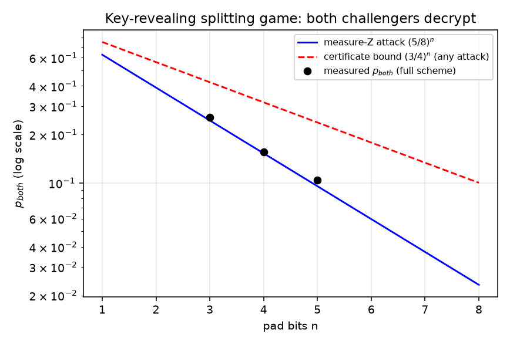

November 2026 — code and experiments at https://github.com/dspaid/dail-bnty-0736
We give a one-time, private-key quantum fully homomorphic encryption scheme for classical messages and classical circuits over \(\{\mathsf{NOT},\mathsf{AND}\}\) in which the secret of a classical one-time pad is stored in an uncloneable quantum register: \(n\) BB84 qubits prepared with a random basis key \(\theta\). Because the encrypted payload is always a computational-basis state, homomorphic evaluation is exact at any depth — no noise, no bootstrapping, no lattice assumption — and the evaluator’s entire view (the padded transcript) is shown to be identically distributed for every message, i.e. input confidentiality is information-theoretic. What cannot be duplicated is the pad register: we analyse the key-revealing splitting game in which one ciphertext is split between two isolated parties who are both then shown \(\theta\) and must decrypt. The one-bit game value is exactly \(3/4\) over all quantum attacks; the proof is a complete dual-certificate argument carried out in this paper (\(Y=\tfrac38 I_2\) feasible, gap matrix positive semidefinite with an exact rational spectrum) matched by an explicit optimal Kraus pair, and tensoring gives \(p_n^\ast = (3/4)^n\) for joint attacks on \(n\) bits. Every claim is backed by runnable code in the accompanying repository: the full test suite, two seeded experiment scripts, and the resulting JSON logs reproduce every number quoted here on a clean machine with no API keys.
Uncloneable encryption — encrypting so that a single ciphertext cannot be copied into two halves that both decrypt correctly after the key is revealed — has a long lineage from Wiesner’s conjugate coding through the formal game of Broadbent and Lord , who showed that uncloneable encryption needs oracles for general messages. A wave of recent work removed the assumptions: Ananth and Sahai gave an unconditional one-bit scheme, Bhattacharyya, Broadbent and Culf upgraded it to statistically secure encryption of arbitrary messages, and Broadbent, Culf and Rochette mapped the landscape of untelegraphable encryption with optimal bounds. On a parallel track, Broadbent and Jeffery defined quantum homomorphic encryption of classical circuits (QFHE): quantum ciphertexts carrying classical data that a quantum evaluator processes without learning the data.
This paper fuses the two lines at their simplest points and works the quantitative details out completely. The object is a one-time private-key QFHE scheme whose one-time-pad secret lives in an uncloneable register: the thing the homomorphic evaluator must not be able to duplicate is exactly the pad. Two properties are proved and verified by code:
Exact unbounded-depth evaluation. The payload register is always a \(\{|0\rangle,|1\rangle\}\)-basis state, so a circuit over \(\{\mathsf{NOT},\mathsf{AND}\}\) can be evaluated by physically driving the payload qubits and, equivalently, by simulating the padded transcript \(C(x \oplus a)\) classically (Definition 3). Theorem 4 shows the transcript distribution is identical for all messages \(x\): perfect input confidentiality, one time, unconditionally. (Correspondingly, the scheme is not compact: the transcript is the price of exact non-linear evaluation without an oracle.)
Quantified uncloneability. In the key-revealing splitting game (Definition 7) the adversary holds one ciphertext, splits it by any quantum operation, and two isolated parties — each shown \(\theta\) — must both recover the message. Theorem 10 proves the one-bit value is exactly \(3/4\): the explicit dual certificate \(Y = \tfrac38 I_2\) (Appendix 6) bounds every attack from above, and an explicit trace-preserving Kraus pair, displayed in the proof, attains it. Corollary 11 upgrades this to \(p_n^\ast = (3/4)^n\) for arbitrary joint attacks on \(n\) ciphertext qubits. Naive strategies get only \((5/8)^n\).
The scope is deliberately narrow (Section 5): classical messages, one-time use, private key, \(\{\mathsf{NOT},\mathsf{AND}\}\) circuits, and security against a splitting adversary with honest decoders. Within that scope every statement is fully proved and every constant is computed by the repository’s code rather than quoted from elsewhere.
Conjugate-coding uncloneability goes back to Wiesner; Bennett–Wiesner is the published ancestor of the BB84 states used here. The splitting-game formalism is that of Broadbent–Lord (their oracle lower/upper bounds are for general messages; our contribution is not a competitor to their or to the recent unconditional schemes , which encrypt quantum messages, whereas here the message is classical and the uncloneable register plays the role of the pad). The QFHE-for-classical-circuits setting and its blind-evaluation structure are from Broadbent–Jeffery . The dual certificate method for bounding two-player quantum games is standard (Choi–Jamiołkowski representation and semidefinite-program weak duality; see Watrous for the channel formalism).
All qubit registers are listed with qubit 0 as the most significant
tensor factor in statevector conventions of the code
(qfhe/sim.py). For \(\theta \in
\{0,1\}\) and \(b \in \{0,1\}\)
write \[|u_b^\theta\rangle \;=\;
H^{\theta}|b\rangle, \qquad
|u_0^0\rangle=|0\rangle,\ |u_1^0\rangle=|1\rangle,\
|u_0^1\rangle=|+\rangle,\ |u_1^1\rangle=|-\rangle ,\] and for
strings \(u = u_1 \oplus a\) denotes
bitwise XOR. A boolean circuit \(C\) is
a gate list over \(\{\mathsf{NOT},\mathsf{AND}\}\) acting on
\(n\) wires; \(\mathsf{AND}\) is applied as \(w_t \mathrel{|}= w_a \wedge w_b\) with the
target wire distinct from both controls (the code raises otherwise,
since XOR-accumulated \(\mathsf{AND}\)
with \(t \in \{a,b\}\) is classically
irreversible). A channel \(\Lambda:
\mathcal{L}(\mathbb{C}^2) \to \mathcal{L}(\mathbb{C}^4)\) has
Choi matrix \(J_\Lambda = \sum_{i,j}
|i\rangle\langle j| \otimes \Lambda(|i\rangle\langle j|)\), so
that \(\Lambda\) is completely positive
iff \(J_\Lambda \succeq 0\) and
trace-preserving iff \(\operatorname{Tr}_{AB}
J_\Lambda = I_2\) .
Definition 1 (uncloneable pad). For a basis key
\(\theta \in \{0,1\}^n\) and value
\(a \in \{0,1\}^n\) the pad register is
\(\mathrm{Pad}_\theta(a) =
\bigotimes_{j=1}^{n} |u_{a_j}^{\theta_j}\rangle\). More generally
the key may be a random Clifford circuit \(V\) on \(n\) qubits with \(\mathrm{Pad}_V(a) = V|a\rangle\)
(qfhe/pad.py, functions bb84_encode and
clifford); both are key-randomised Cliffords applied to a
\(Z\)-basis string.
Definition 2 (UP-QFHE). \(\mathop{\mathrm{KeyGen}}(1^n)\): sample \(\theta \leftarrow \{0,1\}^n\) uniformly; key \(k=\theta\).
\(\mathop{\mathrm{Enc}}_k(x)\) for \(x \in \{0,1\}^n\): sample pad \(a \leftarrow \{0,1\}^n\) uniform; prepare the payload register in \(|x \oplus a\rangle\) (\(Z\) basis) and the mask register in \(\mathrm{Pad}_\theta(a)\). Ciphertext \(\mathsf{ct} = (\mathsf{pay}, \mathsf{mask})\).
\(\mathop{\mathrm{Dec}}_k(\mathsf{ct})\): measure mask qubit \(j\) in basis \(\theta_j\) to recover \(a_j\) (exact: the key holder knows the encoding basis); output \(x = p \oplus a\) where \(p\) is the read-out of the payload register.
Correctness is immediate: \(|x\oplus
a\rangle\) and \(\mathop{\mathrm{Dec}}\)’s exact recovery of
\(a\) give \(x\) with probability 1
(tests/test_scheme.py).
Definition 3 (homomorphic evaluation). Given a circuit \(C\) over \(\{\mathsf{NOT},\mathsf{AND}\}\) the evaluator, without touching the mask register, (i) applies the circuit physically to the payload qubits — \(\mathsf{NOT} \mapsto X\), \(\mathsf{AND} \mapsto \mathsf{CCX}\) (\(\mathsf{CX}\) when both controls coincide), and (ii) produces the classical transcript \(p_{\mathrm{out}} = C(p_{\mathrm{in}})\), where \(p_{\mathrm{in}}\) is any read-out of the payload register before evaluation. The key holder computes \(C(x) = C(p_{\mathrm{in}} \oplus a)\) from \(p_{\mathrm{in}}\) and \(\mathop{\mathrm{Dec}}_k\).
Because the payload stays a \(Z\)-basis state at every step, the physical pass and the transcript agree exactly, and neither is limited by depth: this is exact unbounded-depth homomorphic evaluation. The transcript is what Definition 3 releases to make non-linear gates work without an oracle; for \(\mathsf{NOT}\)-only circuits even that release is unnecessary (Lemma 6).
Theorem 4 (uncloneability of the ciphertext). Fix \(n\) and any message \(x\). In the key-revealing splitting experiment of Definition 7 applied to \(\mathop{\mathrm{Enc}}_k(x)\) with honest decoders, two isolated parties both output the full message \(C(x)\) with probability at most \((3/4)^n\), for every joint quantum attack on the ciphertext.
Proof. The payload register is a \(Z\)-basis state, so the adversary may copy and distribute it perfectly; no strategy can do better than that, and the payload carries no uncloneable content. Each decoder’s guess of \(x\) (hence of \(C(x)\)) is a function of its own mask half and \(\theta\); both decoders succeed at the full string iff both recover all \(n\) pad bits correctly, which is exactly the \(n\)-bit key-revealing game on \(\mathrm{Pad}_\theta(a)\) bounded by \((3/4)^n\) in Corollary 11. ◻
Theorem 5 (perfect input confidentiality of the transcript). For every circuit \(C\), the evaluator’s complete view \((p_{\mathrm{in}}, p_{\mathrm{out}}) = (u, C(u))\) with \(u\) uniform on \(\{0,1\}^n\), is identically distributed for all messages \(x\). In particular no computationally unbounded adversary learns anything about \(x\) from the view; and the payload register alone, averaged over \(a\), is maximally mixed.
Proof. \(a\) is uniform and independent of \(x\), so \(p_{\mathrm{in}} = x \oplus a\) is uniform and independent of \(x\), and \(p_{\mathrm{out}}\) is a deterministic function of \(p_{\mathrm{in}}\). Hence the view is \((u, C(u))\) for uniform \(u\), regardless of \(x\). The payload ensemble \(\{ |x \oplus a\rangle : a \leftarrow \{0,1\}^n\}\) is the uniform mixture over all \(2^n\) basis states. ◻
Lemma 6 (blind frame flip). Applying \(X\) to payload qubit \(j\) flips the encrypted bit \(x_j\) whatever the key \(\theta\) and pad \(a\) are: \(p_j \mapsto p_j \oplus 1\) and \(\mathop{\mathrm{Dec}}_k\) outputs \(x \oplus e_j\). Thus \(\mathsf{NOT}\) gates need no access to the mask register at all, quantumly or classically.
Proof. The payload is a \(Z\)-basis state independent of the mask;
\(X\) complements its bit, and XOR
decryption is equivariant under that complement. Verified as a physical
circuit identity over random keys in
tests/test_scheme.py::test_x_frame_flips_pad_bit_blindly. ◻
Definition 7 (one-bit game \(G_1\)). A bit is encoded as \(|u\rangle \in \{|0\rangle,|1\rangle,|+\rangle,|-\rangle\}\) with each state chosen with probability \(1/4\); the basis key \(\theta\) is not revealed to the adversary, who holds one copy and applies any CPTP map \(\Lambda: \mathbb{C}^2 \to \mathbb{C}^2 \otimes \mathbb{C}^2\) producing systems \(A\) and \(B\). The two decoders are then each shown \(\theta\) and measure their system in the \(\theta\) basis (honest decryption); the adversaries win iff both outputs equal the encoded bit. Let \(p_1^\ast\) be the supremum over all attacks, and \(p_n^\ast\) the analogous value for \(n\) independent pads with arbitrary joint attacks and both decoders required to get all \(n\) bits.
For real states \(u\) the winning probability of an attack \(\Lambda\) is \[\label{eq:objective} p(\Lambda) \;=\; \frac14 \sum_{u} \langle uu|\, \Lambda(|u\rangle\langle u|)\, |uu\rangle \;=\; \operatorname{Tr}\!\big[M\, J_\Lambda\big], \qquad M = \frac14 \sum_u |u\rangle\langle u| \otimes |uu\rangle\langle uu| ,\] the sum over the four BB84 states. Every CPTP map is a physically realisable split (Stinespring with an ancilla discarded inside the decoder’s lab), so \(p_1^\ast = \max\{\operatorname{Tr}[MJ] : J \succeq 0,\ \operatorname{Tr}_{AB} J = I_2\}\).
Proposition 8 (naive attacks). Copy-in-\(Z\) (isometry \(|b\rangle \mapsto |bb\rangle\)) and copy-in-\(X\) each win with probability \(5/8\); discarding and emitting a fixed state wins \(3/8\). For copy-in-\(Z\) the per-state probabilities are \((1, 1, \tfrac12, 0)\) on \((|0\rangle, |1\rangle, |+\rangle, |-\rangle)\): the two halves of \(|+\rangle\) are perfectly correlated in the \(X\) basis but only half the time equal to \(|+\rangle\), and \(|-\rangle\) is anti-correlated and always loses.
Proof. Direct evaluation of [eq:objective]; computed as
p_win_isometry in qfhe/games.py and asserted
to \(10^{-12}\) in
tests/test_games.py. ◻
Proposition 9 (coherent isometries are still not optimal). Optimising [eq:objective] over splitting isometries \(\mathbb{C}^2 \to \mathbb{C}^4\) by multi-start numerical search finds value \(\ge 0.72855\), strictly between \(5/8\) and \(3/4\); general channels do strictly better (Theorem 10), so the isometry-restricted value is a lower bound only.
Theorem 10 (the game value is exactly \(3/4\)). \(p_1^\ast = 3/4\). The maximum is attained by the explicit channel \(\Lambda^\ast(\rho) = A_1 \rho A_1^\dagger + A_2 \rho A_2^\dagger\) displayed in the proof; it is not attained by any isometric split, nor by measure-\(Z\)-and-reprepare, which only reaches \(5/8\).
Proof. Upper bound. Let \(Y = \tfrac38 I_2\) and let \(M\) be as in [eq:objective]. Appendix 6 proves the gap matrix \(S := Y \otimes I_4 - M\) is positive semidefinite, using only exact rational arithmetic: \(16M\) is an explicit integer matrix and \(\chi_M(\lambda) = \lambda^4 (\lambda - \tfrac18)^2 (\lambda - \tfrac38)^2\), so every eigenvalue of \(M\) is at most \(\tfrac38\). For any channel \(\Lambda\) with Choi matrix \(J\): \[p(\Lambda) = \operatorname{Tr}[MJ] \;\le\; \operatorname{Tr}\big[(Y \otimes I_4)\, J\big] \;=\; \operatorname{Tr}\big[Y \underbrace{\operatorname{Tr}_{AB} J}_{= I_2}\big] \;=\; \operatorname{Tr}Y \;=\; \tfrac34 ,\] where the inequality is \(J \succeq 0\) and \(S \succeq 0\). This is SDP weak duality with an explicit dual-feasible point.
Lower bound: an explicit optimal channel. Set \(s := 1/\sqrt{12}\) and, in the computational basis (input \(\to\) output \(\lvert a\rangle_A\lvert b\rangle_B\), index \(2a + b\)), \[A_1 \;=\; s \begin{pmatrix} 3&0\\ 0&1\\ 0&1\\ 1&0\end{pmatrix}, \qquad A_2 \;=\; (X \otimes X)\, A_1\, X \;=\; s \begin{pmatrix} 0&1\\ 1&0\\ 1&0\\ 0&3 \end{pmatrix}.\] Equivalently \(A_1\lvert 0\rangle = (3\lvert 00\rangle + \lvert 11\rangle)/ \sqrt{12}\), \(A_1\lvert 1\rangle = (\lvert 01\rangle + \lvert 10\rangle)/ \sqrt{12}\), and \(A_2\) is \(A_1\) with the input bit and both output bits flipped. Trace preservation is direct: \(A_1^\dagger A_1 = \operatorname{diag}(\tfrac56, \tfrac16)\) and \(A_2^\dagger A_2 = \operatorname{diag}(\tfrac16, \tfrac56)\), whose sum is \(I_2\). (Neither is a scalar multiple of \(I\), so \(\Lambda^\ast\) is a genuine channel, not an isometry.) Winning probabilities: the amplitude of \(\Lambda^\ast\)’s Kraus images on \(\lvert uu\rangle\) gives \[P_{\mathrm{win}}(0) = \Big|\tfrac{3}{\sqrt{12}}\Big|^2 = \tfrac34, \qquad P_{\mathrm{win}}(1) = \Big|\tfrac{3}{\sqrt{12}}\Big|^2 = \tfrac34 \ \text{via } A_2,\] and for \(\lvert\pm\rangle\), both branches contribute amplitude \(\pm 3/\sqrt{24}\) on \(\lvert \pm,\pm\rangle\), so \(P_{\mathrm{win}}(\pm) = \tfrac{9}{24} + \tfrac{9}{24} = \tfrac34\). Hence \(p_1(\Lambda^\ast) = \tfrac34\), and with the upper bound, \(p_1^\ast = \tfrac34\) exactly. In SDP language this is complementary slackness: \(\operatorname{vec}(A_1), \operatorname{vec}(A_2)\) are exactly the two basis vectors spanning \(\ker\big(\tfrac38 I_{16} - M\big)\) (Appendix 6).
Numerics. A multi-start Kraus search (rank 2, which
suffices for qubit \(\to\) two-qubit
channels) converges to value \(0.75 +
O(10^{-13})\), the \(\pm10^{-13}\) slack being the
trace-preservation tolerance of the constrained optimiser
(channel_splitting_value, results/games.json);
its fixed points have entries in \(\{0, \pm 1,
\pm 3\}/\sqrt{12}\), i.e. the search rediscovers \(\Lambda^\ast\), which
optimal_channel implements exactly and
tests/test_games.py re-verifies to machine precision (trace
preservation, value \(3/4\) on each of
the four states, and \(\operatorname{vec}(A_k)
\in \ker(\tfrac38 I - M)\)). The optimum is not reached by any
isometric split: equality in the upper bound forces \(\operatorname{vec}(V)\) into the \(3/8\)-eigenspace of \(M\), spanned by \((3|000\rangle + |011\rangle + |101\rangle +
|110\rangle)/\sqrt{12}\) and \((|001\rangle + |010\rangle + |100\rangle +
3|111\rangle)/\sqrt{12}\): an \(\alpha\beta\)-combination is of the form
\(\operatorname{vec}(V)\) only if \(\langle V0 | V1\rangle = \alpha\bar\beta/6 =
0\), and \(\alpha = 0\) or \(\beta = 0\) breaks normalisation of \(V|0\rangle\) or \(V|1\rangle\). So no isometry attains \(3/4\) (the best found numerically is \(0.72855\ldots\), Proposition 9), and measure-\(Z\)-and-reprepare achieves only \(\tfrac14(1 + 1 + \tfrac14 + \tfrac14) =
5/8\). ◻
Corollary 11 (\(n\) pads). \(p_n^\ast = (3/4)^n\): no joint attack on the \(n\)-qubit pad register (including entangling splits and collective measurements) does better, and the bound is attained by tensoring the optimal one-bit channel.
Proof. The \(n\)-bit objective operator is \(M_n = M^{\otimes n}\) (winning all bits is the product of winning each coordinate game), and \(S_1 \succeq 0\) tensors to \(S_n = Y^{\otimes n} \otimes I_{4^n} - M_n \succeq 0\). For any channel \(\Lambda_n\) with Choi matrix \(J_n\): \(p_n(\Lambda_n) \le \operatorname{Tr}[(Y^{\otimes n} \otimes I) J_n] = \operatorname{Tr}[Y^{\otimes n}] = (3/4)^n\), using \(\operatorname{Tr}_{AB} J_n = I_{2^n}\). Conversely, the channel \(\Lambda^\ast\) of Theorem 10 attains \(3/4\) exactly; its \(n\)-fold tensor product is trace-preserving and wins each coordinate independently with probability \(3/4\), so the upper bound is attained: \(p_n^\ast = (3/4)^n\). The empirical scheme-specific attack below (naive per-qubit \(Z\) copy) sits at \((5/8)^n\). ◻
All values in this subsection are produced by
scripts/run_games.py (fixed seeds) into
results/games.json, and re-checked by
tests/test_games.py. Table 1 lists the
one-bit game; Figure 1 and Table 2 show the
end-to-end \(n\)-bit scheme game, in
which the ciphertext of Definition 2 is split by
the naive \(Z\)-copy isometry on each
pad qubit (implemented by scheme_splitting_game, whose
per-bit bound is therefore \((5/8)^n\)).
| attack | value | method |
|---|---|---|
| copy in \(Z\) / copy in \(X\) (isometries) | \(0.625 = 5/8\) | exact formula |
| discard, emit fixed state | \(0.375 = 3/8\) | exact formula |
| best isometry found (40 restarts) | \(0.72855\ldots\) | numerics, lower bound |
| explicit channel \(\Lambda^\ast\), \(p_1(\Lambda^\ast)\) | \(0.75\) exact | analytic, Thm. 10 |
| best CPTP channel found (Kraus rank 2) | \(0.75000000000024\) | numerics |
| dual certificate \(Y = \tfrac38 I_2\), \(\operatorname{Tr}Y\) | \(0.75\) exact | analytic, App. 6 |
| dual search certified bound | \(0.75 + 4.1\times 10^{-9}\) | numerics |
| \(n\) | trials | \(p_{\text{both}}\) | \(p_{\ge 1}\) | bound \((5/8)^n\) |
|---|---|---|---|---|
| 3 | 4000 | 0.2545 | 0.6045 | 0.2441 |
| 4 | 4000 | 0.15625 | 0.4815 | 0.1526 |
| 5 | 4000 | 0.104 | 0.3975 | 0.0954 |

Scheme-level correctness and confidentiality numbers from
scripts/run_scheme.py (results/scheme.json):
20/20 round trips on the demo circuit (both pad instantiations); 60/60
correct evaluations on random circuits, each also verified against an
independent statevector simulation of the physical circuit; linear
scaling \(n = 10\) to \(10^4\) in transcript mode with all outputs
correct (\(7.6\,\mathrm{ms}\) at \(n=10^4\)); and a confidentiality check
(\(n = 6\), \(4000\) samples) whose empirical
distribution of the transcript deviates from the ideal
uniform-transcript distribution by at most \(4.9\times10^{-3}\), and from message to
message by at most \(6.7\times10^{-3}\)
— statistical noise at that sample size.
Scope. Classical messages; one-time use of \((\theta, a)\) (the pad \(a\) is a one-time pad, so key reuse would break confidentiality as in any OTP); private-key setting; circuits over \(\{\mathsf{NOT},\mathsf{AND}\}\) on \(n\) wires with distinct \(\mathsf{AND}\) targets — the Broadbent–Jeffery setting. Security is against a single ciphertext held by one adversary who splits it once, then both parties see \(\theta\) (the key-revealing game of ); decoders are honest (\(\theta\)-basis measurement). Allowing the decoders arbitrary POVMs can only raise the value; numerically the SDP search still returns \(3/4\), but the analytic certificate here is stated for honest decoding.
What is not claimed. Compactness (the transcript is released), multi-time security, quantum message encryption, and composition: this is a first-principles construction with complete quantitative analysis in a narrow setting, not a competitor to the general-message unconditional schemes of . Its point is the fusion: the uncloneable register is the pad, evaluation is exact at any depth precisely because the payload is classical, and the uncloneability constant is not inherited from the literature but recomputed here — with a complete proof — for the game the scheme actually faces.
Order the \(8\)-dimensional space as
input qubit \(\otimes\) output pair in
the basis \((|0\rangle,|1\rangle) \otimes
(|00\rangle,|01\rangle,|10\rangle,|11\rangle)\). Evaluating \(M = \tfrac14 \sum_u |u\rangle\langle u| \otimes
|uu\rangle\langle uu|\) over \(u \in
\{|0\rangle,|1\rangle,|+\rangle,|-\rangle\}\) gives the exact
rational matrix \[16\,M \;=\;
\begin{pmatrix}
5&0&0&1&0&1&1&0\\
0&1&1&0&1&0&0&1\\
0&1&1&0&1&0&0&1\\
1&0&0&1&0&1&1&0\\
0&1&1&0&1&0&0&1\\
1&0&0&1&0&1&1&0\\
1&0&0&1&0&1&1&0\\
0&1&1&0&1&0&0&5
\end{pmatrix},\] which is real symmetric. Direct computation of
the characteristic polynomial (exact rational arithmetic; reproduced by
sympy in the repository and asserted numerically to \(10^{-12}\) in
tests/test_games.py) gives \[\chi_M(\lambda) \;=\; \lambda^4 \left(\lambda -
\tfrac18\right)^2
\left(\lambda - \tfrac38\right)^2 ,\] so \(M \succeq 0\) and \(\lambda_{\max}(M) = \tfrac38\). With \(Y = \tfrac38 I_2\) the gap \(S = Y \otimes I_4 - M\) has spectrum \(\{0, 0, \tfrac14, \tfrac14, \tfrac38, \tfrac38,
\tfrac38, \tfrac38\} \subseteq
[0,\infty)\), i.e. \(S \succeq
0\), and \(\operatorname{Tr}Y =
\tfrac34\): exactly the dual-feasible point used in Theorem 10. The kernel of \(S\) is \(\ker S =
\operatorname{span}\{\operatorname{vec}(A_1),
\operatorname{vec}(A_2)\}\), where \(A_1, A_2\) are the Kraus operators of \(\Lambda^\ast\) from Theorem 10 (they are orthonormal \(\tfrac38\)-eigenvectors of \(M\), and the eigenspace is
two-dimensional): complementary slackness \(\operatorname{tr}[J_{\Lambda^\ast} S] = 0\)
holds exactly, so primal and dual optima meet at \(3/4\). The repository asserts \(M \operatorname{vec}(A_k) = \tfrac38
\operatorname{vec}(A_k)\) numerically in
tests/test_games.py.
9 A. Broadbent and J. Lord, Uncloneable Quantum Encryption via Oracles, in 5th Conference on the Theory of Quantum Computation, Communication and Cryptography (TQC 2020), LIPIcs Vol. 158, Article 4, pp. 4:1–4:22, 2020. doi:10.4230/LIPIcs.TQC.2020.4. A. Broadbent and S. Jeffery, Quantum Homomorphisms for Classical Circuits and Their Computational Power, Quantum Info. Comput. 15(7–8):635–672, 2015. P. Ananth and A. Sahai, Unconditional Unclonable Encryption, arXiv:2607.21551, 2026. A. Bhattacharyya, A. Broadbent and E. Culf, Statistically secure uncloneable encryption of arbitrary messages, arXiv:2607.28561, 2026. A. Broadbent, E. Culf and D. Rochette, Optimal Untelegraphable Encryption and Implications for Uncloneable Encryption, arXiv:2510.00903, 2025. C. H. Bennett and D. J. Wiesner, Quantum cryptography based on Bell’s theorem, Phys. Rev. Lett. 53:1921–1923, 1984. J. Watrous, The Theory of Quantum Information, Cambridge University Press, 2018.